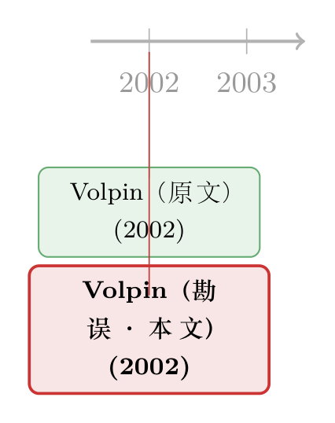

两个手滑的减号，差点把「投票联盟」钉成了坏人
本文读的是 Volpin (2002, Journal of Financial Economics) 的一则勘误 (erratum)：原文 Table 5 在「投票联盟 (voting syndicate)」那一行，手滑多打了两个减号，把本应为正且显著的系数（+0.400***、+0.141*）印成了负数。更正之后，投票联盟与公司的 Tobin's Q 正相关——在投资者保护薄弱的意大利，这种把若干大股东投票权捆在一起的安排，更像是治理的「承诺」，而不是掏空的工具。一篇一页半、正文只有三句话的「论文」，改的却是一个经济结论的方向。
1 一篇只有三句话的「论文」
学术期刊里有一类文章，篇幅短到让人怀疑它配不配占用一个页码。这篇就是。
它登在 Journal of Financial Economics 第 65 卷，从第 159 页到第 160 页，作者 Paolo F. Volpin，伦敦商学院。正文真正说事的，只有三句话：「由于一个失误，原文第 77 页的 Table 5 出了错。在『投票联盟虚拟变量』那一行，意外多放了两个减号。更正后的 Table 5 见下一页。」然后是出版社的一句道歉。
听上去像是排版车间里一件鸡毛蒜皮的小事。可如果你做过横截面回归，就会本能地警觉起来——在一张回归表里，符号几乎就是结论本身。一个系数从 −0.400 变成 +0.400，不是「数值微调」，而是把「这个东西伤害公司价值」整个掉转成「这个东西提升公司价值」。
于是一个自然的问题是：被这两个减号「冤枉」了的「投票联盟」，到底是什么？它的符号，为什么值得期刊郑重其事地登一页更正？
2 故事的舞台：一个「保护股东」很不灵的国家
要理解这两个减号的分量，先得回到它所修正的那篇原文：Volpin (2002),《Governance with poor investor protection: evidence from top executive turnover in Italy》。
它的舞台是意大利——一个在公司治理研究里被反复当作「反面教材」的国家。这里的上市公司，控制权高度集中在家族和金字塔结构手里，中小股东的法律保护薄弱，控制性股东「掏空 (tunneling)」公司的空间很大。在这样的土壤上，传统那套「分散股东 + 强势董事会 + 活跃接管市场」的治理逻辑基本失灵。于是问题就变得有趣：当法律靠不住时，是什么在替小股东「看住」管理层？
原文的主战场是高管更替 (top executive turnover)：业绩差的时候，老板会不会被换掉？换得越敏感，说明治理越有效。Volpin 的核心发现是——当控制性股东自己兼任高管时，更替对业绩几乎不敏感（壕沟效应，entrenchment）；而当公司被一个投票联盟控制、或存在大额少数股东 (large minority shareholders) 时，更替对业绩明显更敏感。
「投票联盟」在意大利有个专门的名字：patti di sindacato（股东表决权协议）。几个大股东签一纸协议，把各自手里的投票权捆在一起、统一行使，从而联合控制一家公司。它的微妙之处在于：单一控制人无法独断，联盟成员之间相互牵制——这既可能是「分赃同盟」，也可能是一种「谁也别想一个人掏空」的相互监督。
这篇勘误动到的，正是原文用来给「联盟改善治理」这个故事补一刀的旁证：公司价值。
3 出错的那张表：Table 5
原文第 77 页的 Table 5，因变量是公司的 Tobin's Q。它要回答的问题很直接：在控制了一堆治理与规模变量之后，哪一种股权结构，对应更高或更低的公司估值？
把这张表背后的估计方程写清楚，大致是这样一个带固定效应的回归：
$$ Q_i = \alpha + \beta_1\, OM_i + \beta_2\, LM_i + \beta_3\, VS_i + \beta_4\, OHI_i + \beta_5\, Size_i + \gamma_t + \varepsilon_i $$
其中 \(OM\) 是家族经理虚拟变量（至少一半高管来自控制性股东家族），\(LM\) 是大额少数股东虚拟变量（第二大股东持有超过 5% 投票权），\(VS\) 是投票联盟虚拟变量，\(OHI\) 是「高激励控制人」虚拟变量（控制人现金流权超过 50%），\(Size\) 是总资产（以里拉计）的对数，\(\gamma_t\) 是年份固定效应，标准误对相关性与异方差稳健。
错就错在 \(\beta_3\) 这一项。把它单独拎出来，标注清楚这次更正的「案发现场」：
4 把符号扳回来之后
更正后的 Table 5，「投票联盟」这一行报出来的，是两个正数：
- 在只控制行业差异（行业固定效应）的设定里，系数高达
0.400，标准误0.117，t 值约3.4，在1%水平显著（***）； - 在进一步加入公司固定效应、只看同一家公司随时间变化的设定里，系数降到
0.141，标准误0.083，在10%水平显著（*）。
而被这两个减号误植之前，它们会被读成 −0.400 和 −0.141——也就是「被投票联盟控制的公司，估值更低」。一念之差，结论南辕北辙。
注意系数从行业固定效应下的 0.400 掉到公司固定效应下的 0.141。这不是矛盾，而是信息：很大一部分「联盟—高 Q」的关联，来自公司之间的固定差异（哪一类公司更容易组成稳定联盟），只有一小块来自同一家公司内部联盟状态的变化。后者更接近「效应」，却也更弱、更噪。
这张表里，没出错的那几行其实同样耐读，而且方向一致地支撑着原文的故事：家族经理虚拟变量 \(OM\) 在四列里都是负的，从 −0.067* 到 −0.116***——控制性家族亲自掌舵，对应更低的估值，这正是壕沟效应的影子；公司规模 \(Size\) 也稳定为负（−0.059** 到 −0.092***）。大额少数股东 \(LM\) 则在统计上贴近零（−0.072 与 0.000，都不显著）。
于是反转出现：被改对符号之后，整张表突然「自洽」了。原文主结果说投票联盟让高管更替对业绩更敏感（治理更硬）；而一家治理更硬的公司，本就该对应更高的市场估值。两个减号一旦扳回来，「更替敏感性」和「公司价值」这两条证据线，终于指向了同一个方向——在法律靠不住的地方，把大股东的投票权捆在一起，更像是一种相互制衡的承诺，而不是合伙掏空。
（关于大股东在弱保护环境里究竟能拿走多少、又为什么有时反而收敛，可参见《拍卖桌上量出来的「掏空」：当法律缺席，大股东能拿走一家公司的几成？》与《财报里的「水分」，原来是大股东在为自己打掩护》。）
5 数据
虽是勘误，Table 5 的样本信息一并保留了下来，值得一记：
- 观测单位：意大利上市公司—年；
- 样本量：四列回归都是
1,234个观测； - 关键变量：四个治理/股权虚拟变量 + 公司规模，外加未报告系数的年份固定效应；
- 固定效应：前两列为行业固定效应，后两列为公司固定效应；
- 标准误：对相关性与异方差稳健（稳健标准误置于括号内）。
整篇勘误没有提供更多正文或参考文献——它本就不是一篇新研究，而是对一篇旧研究的一次外科手术式更正。
6 文献脉络
这条「脉络」短得有些特别，因为它几乎只有一个节点和它的影子。
原文 Volpin (2002) 处在「投资者保护与公司治理」这条大河的下游：当一国法律保护薄弱时，治理的重担从「外部市场」转移到「内部股权结构」——金字塔、家族控制、以及像 patti di sindacato 这样的投票联盟。原文的贡献，是用意大利高管更替这块「干净的肌肉」，把「联盟究竟好不好」这个问题做了实证。而这篇 2002 年的勘误，则是同一作者在同一年里，对自己那张关键旁证表做出的方向修正。

换句话说，这条时间线短到只剩「原文」与「它的更正」——但恰恰是这种短，提醒我们一件容易被忽略的事：一篇论文的「最终版本」，有时并不是它首次刊出的那一版。
（学术期刊里这类「事后修正方向」的故事并不孤单。一个尤其相近的例子，是符号被弄反的另一桩公案——《为了留住那些「零」，我们把结论的符号弄反了》；还有作者亲手撤回整篇文章的《一篇被作者亲手撤回的 JFE：当「公司债四因子」死于一次时间对齐错误》。）
7 评论与延伸（Q&A + 研究方向）
(a) 几个可能的疑问
Q：两个减号而已，至于专门发一篇勘误吗？
至于。在横截面回归里符号就是结论本身。系数从被误印的
−0.400扳回+0.400，意味着「投票联盟降低公司价值」与「提高公司价值」的彻底对调。在弱投资者保护这个背景下，这个方向恰恰是判断联盟「是掏空工具还是治理承诺」的关键证据，所以值得一次显眼的更正。
Q：投票联盟凭什么会提高 Q？
Patti di sindacato 把若干大股东的投票权捆在一起统一行使，单一控制人无法独断，联盟成员之间相互牵制，从而压缩了任何一方单独掏空的空间。原文的主结果——联盟使高管更替对业绩更敏感——本就是「治理更硬」的直接证据；市场对一家治理更硬的公司给出更高估值，自然顺理成章。
Q：这能算因果吗？
不能。Table 5 是带固定效应的（面板）相关性，投票联盟的形成是内生的：好公司也许更容易凑成稳定联盟，差公司也可能被迫抱团。符号被改对了，但识别层面它仍然只是相关性，而非干净的因果效应。
Q：加了公司固定效应后系数从 0.400 掉到 0.141，是不是说效应很弱？
说明大部分关联来自公司间的固定差异（哪一类公司有联盟），只有一小部分来自同一公司内部联盟状态的变化。后者更接近「效应」，却也更弱、更容易被噪声淹没。这是面板回归里很常见的「跨截面 vs. 组内」分解，不必读成「结论站不住」。
Q：那家族经理那一行为什么是负的，会不会也出错了？
家族经理那一行没出错，方向稳健地为负（
−0.067到−0.116）。控制性家族亲自出任高管，外部约束更弱、壕沟更深，对应更低的估值——这与原文的壕沟效应一脉相承。
Q：这次更正会推翻原文的主结论吗？
不会。原文关于高管更替—业绩敏感性的核心发现并不依赖 Table 5。这次修正的，是「公司价值」这条旁证的方向；它的作用不是颠覆，而是让旁证与主结论重新对齐——联盟改善治理，自然也对应更高的估值。
(b) 几个可能的研究问题与提案
1. 把投票联盟搬进信用市场。 【经济故事】如果联盟真的约束了掏空、保护了现金流，那么受益的不只是股东，还有债权人——联盟控制的公司，违约风险溢价是否更低？【可行性】中。需要意大利公司债二级市场报价/成交数据，叠加 patti di sindacato 的成员与期限（依规需披露），用联盟的成立/解散事件做事件研究。难点在样本量与联盟披露的颗粒度。
2. 外资持有人 vs. 本地联盟。 【经济故事】当外国机构投资者进入一个弱保护市场，他们是替代了投票联盟的监督角色，还是被既有联盟挡在门外、只能买「挑剩的」？【可行性】中高。可用 Orbis/FactSet 跨国持股数据，围绕投资者保护改革或指数纳入做 DiD，比较有/无强势本地联盟的公司在外资进入后的估值与治理变化。
3. 给「符号翻转型」勘误做一次系统体检。 【经济故事】这篇勘误提醒我们：顶刊里「方向被印反」的错误并不只是排版事故，它可能改写一段时间内被广泛引用的结论。到底有多频繁？被错引用了多久？【可行性】高。数据是公开的 erratum/corrigendum 页 + 引用数据库，纯文本挖掘即可，描述性但极有趣，也能反推同行评审与排版流程的薄弱环节。
4. 联盟、流通股与流动性。 【经济故事】被联盟锁定的股份不在市场上自由流通，自由流通股更少是否意味着更差的流动性？若是，则 Q 的解读里混入了流动性折价，可能污染「联盟—高估值」的因果叙事。【可行性】高。意大利交易所微观结构数据 + 持股集中度，足以把流动性这条混淆通道单独拎出来检验。
8 我的判断
先说贡献：作为一篇勘误，它做了它该做的——把一个方向性的错误及时、显眼地纠正过来。在我看来，这件事的真正价值不在那两个减号，而在它无意间演示了一个常被低估的事实：在横截面回归的世界里，符号的分量等于整个结论的分量。 一个 − 与一个 +，对应着对「投票联盟」截然相反的道德评判，也对应着对意大利式治理截然相反的政策含义。
再说担忧：这次更正只触及符号，并没有、也不可能修复 Table 5 本身的识别局限。投票联盟是内生的，固定效应能吸收掉公司间的固定异质性，却挡不住「联盟形成与公司前景同时被某个未观测因素驱动」这种内生性。所以即便符号被扳回正，「联盟提升公司价值」仍是一个相关性陈述，而非干净的因果。
最后说我想看到的：我更想看到有人拿一次外生的联盟成立或瓦解（比如继承、监管变化、成员退出引发的协议重订）当作冲击，去识别投票联盟对估值与债务成本的真实效应；尤其是把这条逻辑延伸到信用市场——如果联盟真的「替小股东看住了管理层」，那么它也应当替债权人看住了现金流。那才是把这两个减号背后的经济学，真正做实的一步。
参考文献
- Volpin, P. F. (2002). Governance with poor investor protection: evidence from top executive turnover in Italy. Journal of Financial Economics 64(1), 61–90.
- Volpin, P. F. (2002). Erratum to "Governance with poor investor protection: evidence from top executive turnover in Italy" [Journal of Financial Economics 64 (2002) 61–90]. Journal of Financial Economics 65(1), 159–160.